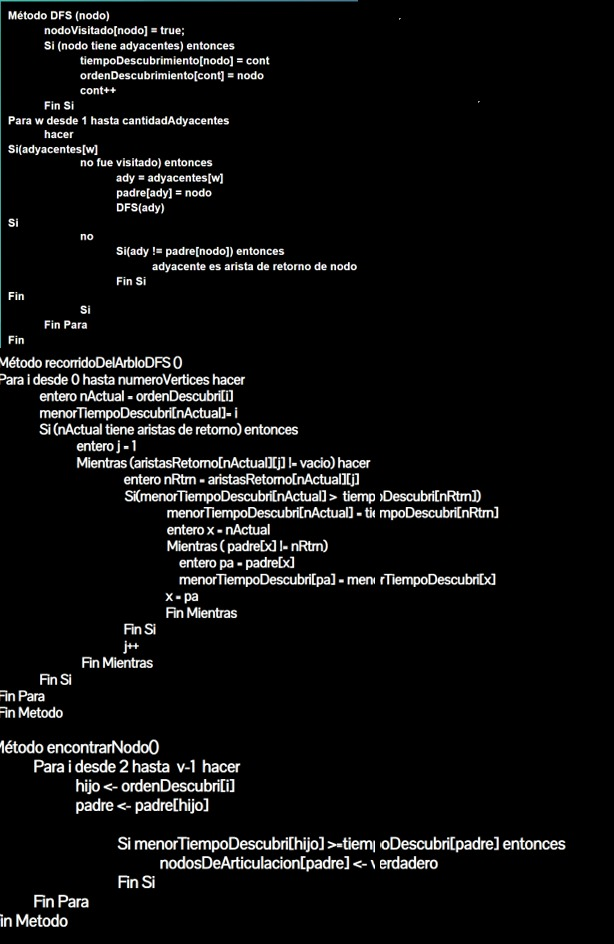

Puntos de articulación
Todos los nodos ingresados deben estar conectados
Nodos Rojos: Puntos de articulación
Pseudcodigo
1.DFS(G)
2. For v in G
3. If v not visited then
4. DFS-Visit(G, v)
5. End If
6. End For
7.End
8. DFS-Visit(G, u)
9. Mark u as visited
10. For v in Adj(u)
11. If v not visited then
12. Insert edge (u, v) in DFS tree
13. DFS-Visit(G, v)
14. End If
15. End For
16. End
